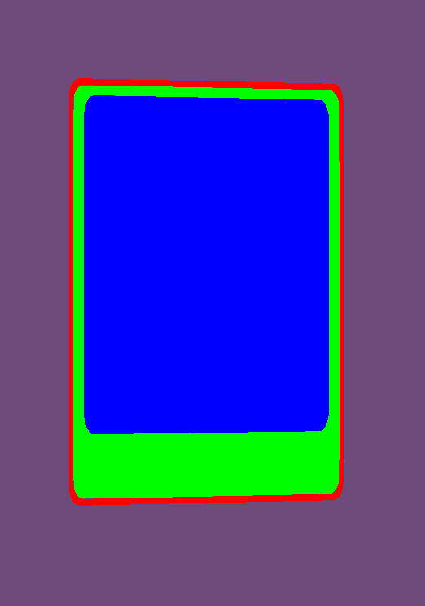
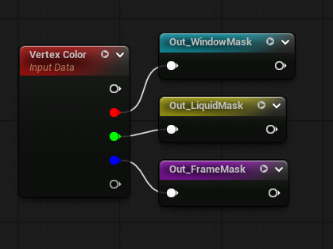
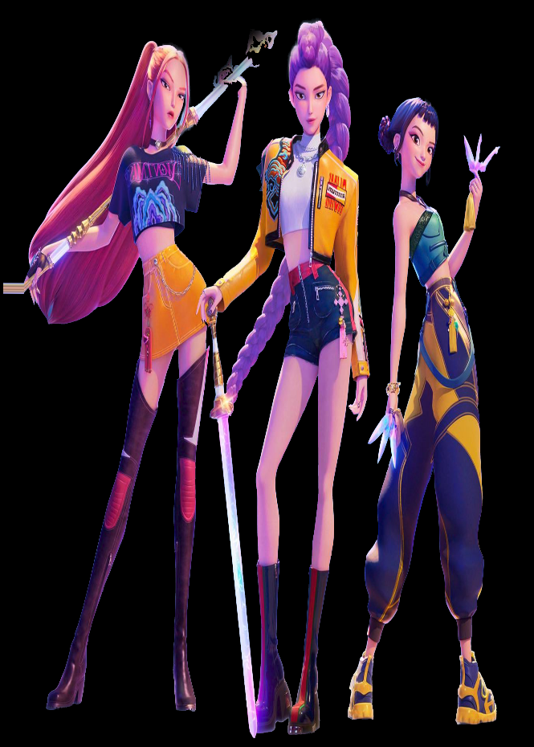
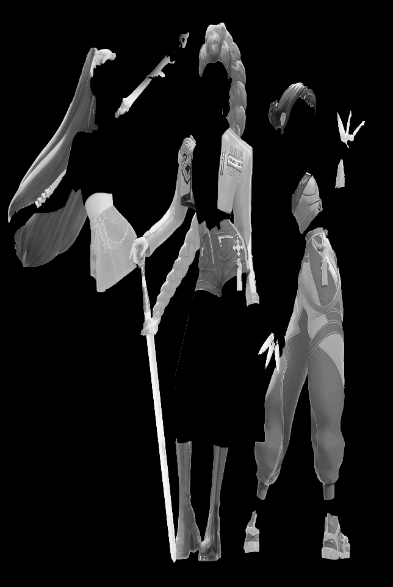

A study on complex shaders for digital cards
The key components of this shader are the pseudo fluid shader inside the card’s frame and the iridescence effect that is applied on specific parts of the card.
LIQUID EFFECT #
This kind of fake liquid is an extremely common trick in video games and there are plenty of really good tutorials about it. Although, while it is such a common topic, most of the content out there is Unity based. So, I decided to replicate the core mechanics of the system in Unreal.
To get the desired effect the first thing that we should make is a World Position mask that is getting the rotation about the two axes that we want the mask to tilt.

The two parameters that are driving the rotation are called WobbleX and WobbleY respectively and they are actually the most important part of the effect.


The height of the liquid is based on a simple gradient on Z coordinates. To make this work we should subtract the Position of the object from the World Position to basically pin the mask on the object and not be relative to world coordinates.


To finalize the look of the shader and especially make it fit the IP, we should create some floating glitter.
I tried to keep the shader as lightweight as possible, so I decided to use a simple noise texture with some contrast and intensity parameters to make the illusion of glitter on the card’s outer frame.

By combining different Noise Normals and a gradient mask for fake depth, we can make the liquid shader more convincing and appealing especially when the card is moving and the whole setup is fired up.


And what do I mean by fired up?
The shader above is nothing if we don’t apply it into a Blueprint logic that calculates the pendulum motion of the effect based on the rotation and velocity of the card in runtime.
I tried a bunch of different methods to achieve this but I think that the most minimal yet good looking is the following:

I figured that using a Sequence node was the easiest way to keep everything organized.
Always keep in mind to SET every variable when you change its value if you want to use it later on.
First of all we should initialize the core Variables. Those are the Actor’s rotation, the initial Rotation, the Tilt parameters like current tilt and velocity based tilt and the initial Velocity.

The tilt of the liquid is based on the Pitch and Yaw of the card.

Then we calculate the Velocity of the card.

And wrap everything up by overwriting the WobbleX and WobbleY values of the material we created, based on the new Rotation and Velocity scales.

Now the liquid inside the card should rotate when you move the card following a pendulum motion that smoothly returns to its initial resting position when the card stops.
IRIDESCENT SURFACES #
This kind of effect is really straightforward and easy to implement. In my take I used some noise textures (It is common to use sine waves instead) and a color gradient. The key component of the effect is the camera based coordinates that change the look of the texture based on the viewing angle.


To make sure that the different effects will be applied on the specified areas, different techniques were used.
A common approach would be to create different materials for each part of the card but I don’t believe that such a solution is reasonable for this kind of asset. Instead I used Vertex Colors and UV channels to separate the three main areas of the cards.


Additionally, I used different texture based masks to allow even more control over the shader.



With this setup it is really easy to create multiple complex masking systems for different kinds of effects procedurally.


This project was just a study on shaders and complex masks. Although it is not meant to be an actual game asset, I tried to keep it as efficient as possible and built the shader as a real procedural tool.
I hope that you found this breakdown interesting and inspiring. If you try it for yourself or have anything similar already developed don’t hesitate to reach out to discuss it. There are always new tips and tricks that I would love to learn.